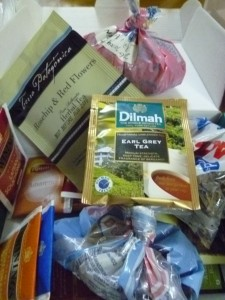

La ceremonia del té
{kind=link}
Mi amigo Juan BC de Córdoba me había enviado una caja de selectas infusiones para ayudarme a ingresar en el mágico mundo de este arte milenario. Juan tenía una forma de enviar la caja de Córdoba a Paraná, César vive en Paraná pero trabaja en Santa Fe, la conexión fue inevitable.
La caja llegó cerrada como la había enviado el brujo que la preparó y cuando la abrimos, además de una selección de tés en saquito, y té en hebras con embazado industrial, había tres bolsitas de hebras que hubieran hecho sospechar a más de un despachante de aduana.
Las bolsitas "artesanales" contenían:
- menta, té y chocolate
- humilde gurí
- rosa mosqueta
Por suerte, precavido, la noche anterior me compré un... ¿saquito de metal? ¿Cómo se llama el elemento donde se pone el té en hebras antes de agregar el agua caliente? Bueno eso.
La pava anunció que el agua había alcanzado la temperatura justa, apagamos la hornalla y llenamos una improvisada tetera. Había agua para 3 tazas medianas, así que calculamos que 6 minutos serían suficientes (y necesarios).
El debut fue con menta, té y chocolate. Los dos somos de tomar el té sin azúcar, pero lo acompañamos con unas tortitas negras.
Dentro de paquete también había 2 paquetitos Terra Patagónica de té en hebras (Rosehip & Red Flowers y Té con trozos de Manzana y Canela) y en saquito:
- Twinings de varios sabores
- Klass
- inti zen
- Dilmah
Ya voy a comentar qué tal resultan.
{kind=link}
Para completar la historia, recordé que en la mochila tenía té que traje de Suecia. Casi un año después todavía estaba en el mismo bolsillo. 2 sobres bien empaquetados marca Four O'Clock (no muy sueco el nombre). No se que tal será, pero agregué uno a "mi caja de tés" y César se llevó el otro de regalo, junto a un Dilmah.
Muchas gracias Juan por el regalo!!
Comentarios
Comments powered by Disqus